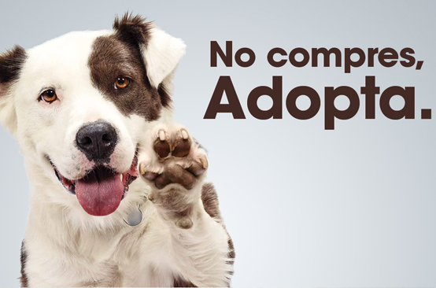

Adoptando una mascota con responsabilidad , amor , compromiso y dedicación , vas a encontrar al ser más amoroso y tierno de tú familia.
Te invitamos a que nos visites en nuestro centro de adopción, situado en Pance en la ciudad de Cali ( Colombia) , donde hay unos perritos y gaticos preciosos esperando encontrar un hogar amoroso como el tuyo que los adopte.
Adoptar una mascota en nuestro centro de Adopción es muy facíl , solo hay que tener un corazón generoso y muchas ganas de tener un nuevo amigo fiel y leal.
Compartelo con tus amigos:

Condiciones para Adoptar
Adoptar una mascota en nuestro centro de Adopción es muy facíl , solo hay que tener un corazón generoso y muchas ganas de tener un nuevo amigo fiel y leal. A Continuación te decimos como hacerlo.
Evaluar su estilo de vida antes de adoptar un animal de compañía.
Comprometerse a cuidar el animal de compañía escogido durante toda su vida, garantizando su bienestar tanto físico como sicológico. Tener un animal de compañía es un compromiso de mínimo 15 años.
Adoptar un animal de compañía que se adapte a su estilo de vida.
Tener los medios económicos suficientes para cubrir todos los cuidados y elementos necesarios para garantizar el bienestar del animal.
Proveer al animal de compañía los cuidados médicos veterinarios necesarios para garantizar su bienestar.
Seguir el programa sanitario establecido por el veterinario, esto incluye la vacunación y desparasitación.
Proveer alimento de buena calidad en la frecuencia requerida y agua permanentemente.
Esterilizar el animal de compañía.
Recoger los excrementos de sus animales.
Identificar su animal de compañía con un collar y una placa de identificación y/o microchip, donde esté el nombre del animal y del propietario, así como la dirección y el teléfono del domicilio.
Brindar el espacio necesario su recreación y descanso, protegido del sol y el frio así como de las inclemencias del clima.
Tener tiempo diario para dedicar al cuidado del animal y brindar afecto.
Acoger el animal de compañía como un miembro más de la familia y como tal requiere socializar con todos los miembros de la familia.
Garantizar que al animal tenga la cantidad de ejercicio diario requerido de acuerdo con su especie.
Garantizar las condiciones de higiene tanto del animal, como de sus espacios de recreación y descanso.
Educar con paciencia al animal de compañía, jamás se debe maltratar.
No permitir que el animal de compañía salga solo de la casa. Siempre deberá salir acompañado y con un collar y correa.